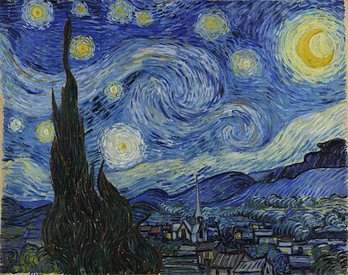
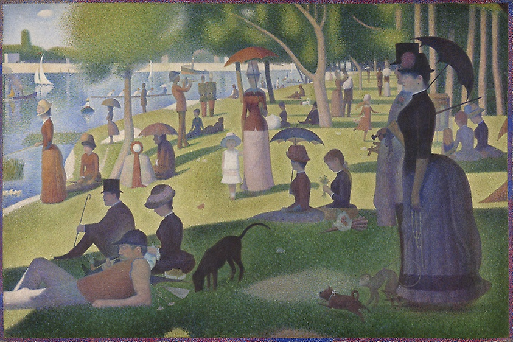
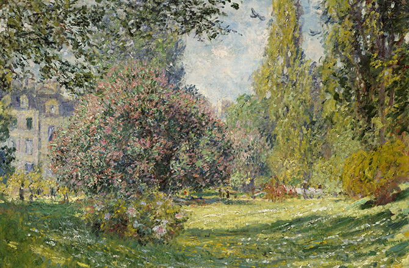
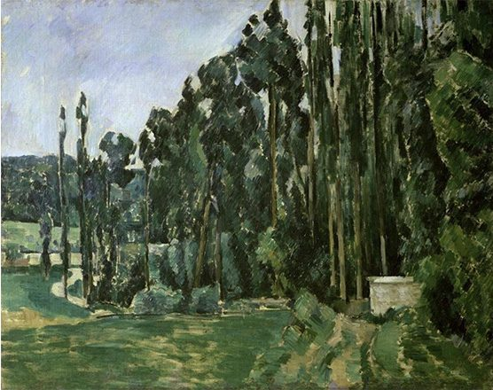
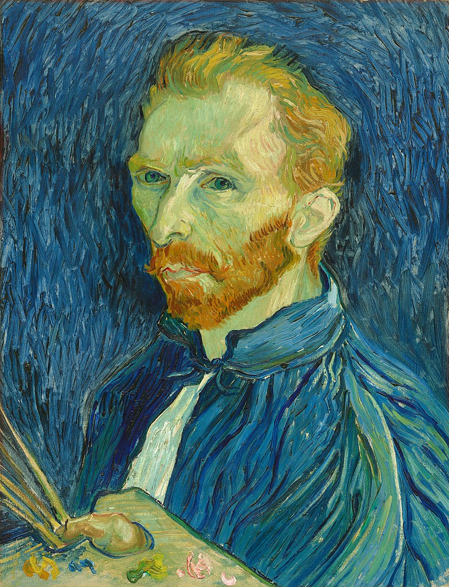
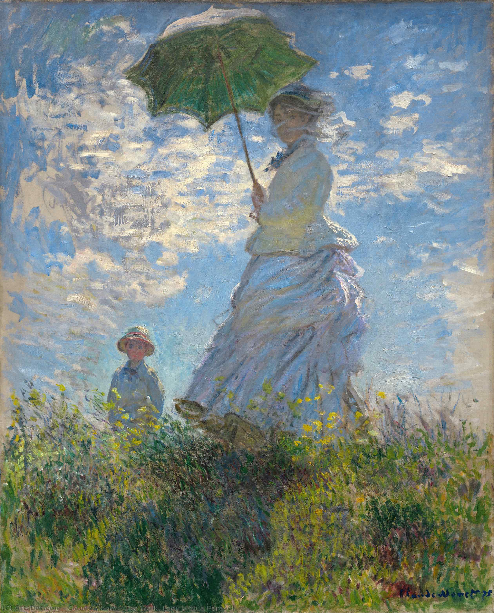

Vincent van Gogh, "The Starry Night," 1889.
Dutch artist Vincent Willem van Gogh (1853-1890) was a post-impressionist painter and among the most famous painters in Western art. He created about 2,100 works of art in just over 10 years, including landscapes, still lifes and portraits. His use of bold and dramatic colors, as well as his impulsive brushwork, have highly influenced modern art.
GEORGES SEURAT A Sunday on La Grande Jatte
GEORGES SEURAT 1859 - Paris - 1891 1859 - Paris - 1891 Dorra, Henri/John Rewald; Seurat. L'Oeuvre peint, Biographie et Catalogue critique. Aus der Reihe „L'Art Français“ unter der Leitung von Georges Wildenstein.
Claude_Monet
GEORGES SEURAT A Sunday on La Grande Jatte
Georges_Seurat
Vincent_van_Gogh
Claude Monet

The Walk. Lady with a Parasol – (Claude Monet)
Claude Monet (1840 - 1926) Lot 114: Claude Monet : Jeune Fille a l'Ombrelle (Girl with the Umbrella)